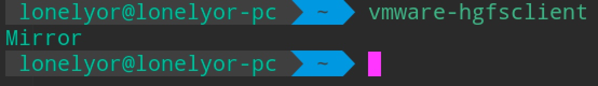
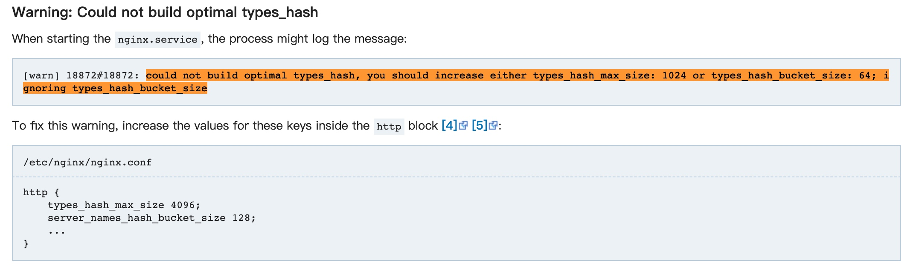
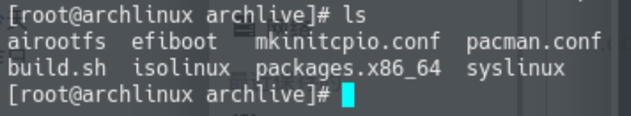
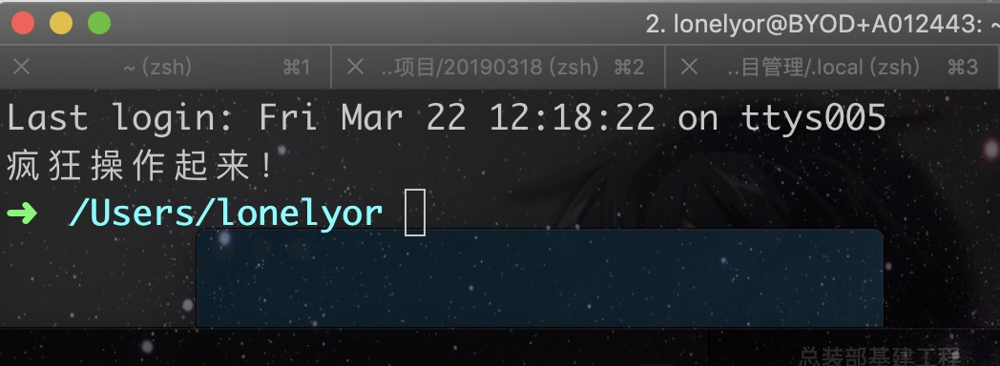

Arch系常用技巧与问题汇总
BlackArch安装vmtools后依然不能复制粘贴解决办法
执行下面两条命令：
sudo /usr/bin/vmware-user
sudo /etc/init.d/vmware-tools restart
给指定用户添加sudo
编辑 /etc/sudoers 文件 添加 “<用户名> ALL=(ALL:ALL) ALL”
给linux终端加一个移动到回收站的功能
在 .bashrc 或 .zshrc 添加一个alias来实现
alias trash="mv -t /home/lonelyor/Trash"
这里的Trash目录自行定义，用法是在终端输入trash test.txt
更多方法可以看 https://superuser.com/questions/1252676/creating-alias-for-trash 中的留言
安装Docker
sudo pacman -S docker
启动docker服务 sudo systemctl start docker
设置docker开机启动服务 sudo systemctl enable docker
干掉sudo
如果还没有 docker group 就添加一个 sudo groupadd docker
将自己的登录名(\({USER} )加入该 group 内。然后退出并重新登录就生效啦 sudo gpasswd -a \){USER} docker
重启 docker 服务 sudo systemctl restart docker
切换当前会话到新 group 或者重启 X 会话。注意，这一步是必须的，否则因为 groups 命令获取到的是缓存的组信息，刚添加的组信息未能生效，所以 docker images 执行时同样有错。
newgrp - docker
或者
pkill X
arch 无法使用 zenmap，报错：'No module named gtk'的解决办法
问题截图：

参考链接：https://bbs.archlinux.org/viewtopic.php?id=200299
问题解决办法：安装 pygtk 包

Manjaro vmware 虚拟机共享宿主机文件夹
在客机里运行如下命令可以列出共享目录： $ vmware-hgfsclient

然后以如下方式挂载：
# mkdir <shared folders root directory>
# vmhgfs-fuse -o allow_other -o auto_unmount .host:/<shared_folder> <shared folders root directory>
我发现这个方法比较麻烦，而且后续问题比较多。 目前使用 smb 文件共享来实现虚拟机与主机共享文件，不依赖虚拟机。
arch 使用 nginx -t 时报错“could not build optimal types_hash, you should increase either types_hash_max_size: 1024 or types_hash_bucket_size: 64; ignoring types_hash_bucket_size” 解决办法
根据官网说明解决。 https://wiki.archlinux.org/index.php/Nginx
添加配置 /etc/nginx/nginx.conf
http {
types_hash_max_size 4096;
server_names_hash_bucket_size 128;
...
}

manjaro 安装 vmtools
下载vmwaretools补丁
git clone https://github.com/rasa/vmware-tools-patches.git
进入vmware-tools-patches目录
cd vmware-tools-patches
运行补丁 中间一路回车 sudo ./patched-open-vm-tools.sh
经过漫长的等待不负众望迎来了第一个错误提示：
找不到/lib/modules/4.19.28-1-MANJARO
这里不慌，反手进入这个目录发现有三个文件：3.16.65-1-MANJARO、4.19.36-1-MANJARO、extramodules-4.19-MANJARO
然后我把4.19.36-1-MANJARO重命名为他需要的4.19.28-1-MANJARO文件名，这样他脚本加载到运行4.19.28-1-MANJARO时可以正确找到该文件，就算这个文件原名不是这个，相当于是假装降级操作
sudo mv 4.19.36-1-MANJARO 4.19.28-1-MANJARO
删除刚刚安装到一半就报错的安装目录
sudo rm -rf vmware-tools-patches
重新安装补丁
sudo ./patched-open-vm-tools.sh
完成
Enjoy
作者：猴猴猴猴猴猴子 来源：CSDN 原文：https://blog.csdn.net/weixin_43043603/article/details/89853916 版权声明：本文为博主原创文章，转载请附上博文链接！
KVM创建虚拟机时报权限错误：monitor: Could not access KVM kernel module: Permission denied failed to initialize KVM: Permission
修改/etc/libvirt/qemu.conf，
#user="root"
user="root"
#group="root"
group="root"
sudo systemctl restart libvirtd.service
Proxmox TASK ERROR: Failed to run vncproxy.解决办法
登陆proxmox的shell然后执行命令：systemctl restart pveproxy 即可。 参考文章： https://www.forum.modulesgarden.com/whmcs-modules/novnc-not-vnc-console-login-to-proxmox-host-failed-t2547/
manjaro更改国内源操作
1、排序并增加中文rank源
sudo pacman-mirrors -i -c China -m rank
选择喜欢的就行，不知道就全选好了。
2、添加 archlinuxcn（archlinux 可用）
修改/etc/pacman.conf文件，在文件后添加如下语句：
[archlinuxcn]
SigLevel = Optional TrustedOnly
Server = https://mirrors.ustc.edu.cn/archlinuxcn/$arch
导入GPG Key
sudo pacman -Syy && sudo pacman -S archlinuxcn-keyring
使用Archiso自制linux发行版
参考官方文档，自制 archlinux 可启动镜像。这样就可以拥有自己的 linux 发行版了。
https://wiki.archlinux.org/index.php/Archiso
修改 pacman.conf，添加自定义存储库 
将 customrepo 的内容改为 archlinuxcn
#[customrepo]
SigLevel = Optional TrustAll
Server = file:///home/user/customrepo/$arch
改为
#[archlinuxcn]
SigLevel = Optional TrustAll
Server = https://mirrors.ustc.edu.cn/archlinuxcn/$arch
archlinux 安装 vmtools 遇到坑了怎么办
使用这个脚本即可：https://github.com/rasa/vmware-tools-patches
$ git clone https://github.com/rasa/vmware-tools-patches.git
$ cd vmware-tools-patches
$ ./patched-open-vm-tools.sh
linux 在终端中打开图形化文件管理器
xdg-open ./ 用图形化文件管理器打开当前文件夹
xdg-open "dir" 打开任意路径
linux sudo配置免密及排除部分命令
lonelyor ALL=(ALL) NOPASSWD:ALL, !/usr/bin/reboot, !/sbin/reboot, !/sbin/ifconfig, !/sbin/shutdown, !/sbin/route, !/sbin/ip
即lonelyor可以免密码执行除reboot、ifconfig、shutdown、route、ip之外的指令。
注意，/etc/sudoers的命令是顺序执行，添加在错误的位置（比如 %sudo ALL=(ALL:ALL) ALL 之前）是无效的。
linux sudo:/etc/sudoers 可被任何人写 解决方案
只需要使用su -进入 root
然后cd /etc，使用chmod 0440 sudoers将权限改回来即可。
终端配置代理
export ALL_PROXY=socks5://127.0.0.1:1080
无法安装docker
请检查是否开启防火墙，防火墙是否屏蔽了docker的传入链接。 通常连不上docker是因为防火墙的原因
批量删除当前目录及其子目录下指定后缀名文件
find . -name "*.tmp" -type f -print -exec rm -rf {} \;
降低cpu使用率
pulimit -l 50 -p 1234 -l后面是使用百分比，-p后面是进城PID，可以使用htop查看进程pid
arch安装配置mongodb
pacman -S mongo
/usr/bin/.mongo --help
systemctl start mongodb.service
这样就启动了mongo，启动的配置文件是：cat /etc/mongodb.conf
然后退出到用户目录，运行mongo
~ ❯❯❯ mongo
/var/lib/mongodb/ 是Arch Linux 的 ** 默认dbpath**
但是无法访问
修改mongodb的用户组为自己的
chown mongodb:lonelyor mongodb
mkdir /home/lonelyor/工作/mongodb
touch /home/lonelyor/工作/mongodb/data
touch /home/lonelyor/工作/mongodb/logs
linux下搜狗输入法不能用的解决办法
删除
～/config
下的
sogou-qimpanel
SogouPY
SogouPY.users
这三个文件夹，然后重启。
arch手动设置屏幕分辨率
参考 https://wiki.archlinux.org/index.php/Xrandr_(%E7%AE%80%E4%BD%93%E4%B8%AD%E6%96%87)
1、先使用xrandr查看屏幕相关信息
2、编辑/e/X/xorg.conf.d ❯❯❯ sudo nano 11-lonelyorx.conf (自己新建)
结果我不怎么会写配置文件，导致写了都没法启动图形界面了，于是又删了，打算手动更改。
3、
xrandr查看当前设置
cvt 1920 1080
cvt 2560 1440
找到正确的参数
xrandr --newmode "1920x1080_60.00" 173.00 1920 2048 2248 2576 1080 1083 1088 1120 -hsync +vsync
xrandr --newmode "2560x1440_60.00" 312.25 2560 2752 3024 3488 1440 1443 1448 1493 -hsync +vsync
然后设置
xrandr --addmode eDP1 1920x1080_60.00
xrandr --addmode HDMI1 2560x1440_60.00
如果一且顺利的话，此时再查看xrandr命令，将发现最佳分辨率设置成功。
4、修改分辨率
xrandr --output eDP1 --mode 1920x1080_60.00
xrandr --output HDMI1 --mode 2560x1440_60.00
xrandr --newmode "1920x1080_60.00" 173.00 1920 2048 2248 2576 1080 1083 1088 1120 -hsync +vsync
xrandr --addmode eDP1 1920x1080_60.00
xrandr --output eDP1 --mode 1920x1080_60.00
这样屏幕分辨率就变成1080p了。
查看端口占用
使用命令：
lsof -i:8000
或
netstat -tunlp|grep 8000
均可。
linux查看磁盘空间占用情况
主要是使用 df 命令，使用 df --help 可以查看更多选项。
举例： df -k 以KB为单位显示磁盘使用量和占用率。 df -k 以M×××
使用“du -ck /home”命令，列出home目录下所有文件或目录占用的大小，以KB作为计量单位。以及统计出当前home目录占用的总大小。
解决npm更新或安装软件时下载较慢等问题
更换淘宝源即可，在终端执行命令：
npm config set registry https://registry.npm.taobao.org
 然后将网络设置为“仅主机”模式。
然后将网络设置为“仅主机”模式。
Windows常用技巧与问题汇总
windows下创建和启动wifi
整理文件时候找到了3年前写的东西：
创建 wifi netsh wlan set hostednetwork mode=allow ssid=!@#$%&* key=passwd123 启动 wifi netsh wlan start hostednetwork
虚拟机安装win10操作系统
本片文章是为新手准备的
虚拟机安装win10可以查看以下教程： http://baijiahao.baidu.com/s?id=1597148758310739517&wfr=spider&for=pc
若原文链接失效，则可以百度搜索“虚拟机安装win10操作系统”
解决windows右键新建消失问题
新建一个文件后缀名写为reg（注册表文件格式）的文件。 然后用记事本或文本编辑器打开，写入文件内容：
Windows Registry Editor Version 5.00
[HKEY_CLASSES_ROOT\Directory\Background\shellex\ContextMenuHandlers\New]
@="{D969A300-E7FF-11d0-A93B-00A0C90F2719}"
保存，然后双击该文件，即可。
OneDrive映射到本地（像访问本地磁盘一样访问网盘）
参考以下链接即可： http://baijiahao.baidu.com/s?id=1549908946659905&wfr=spider&for=pc
举一反三，webdav、nfs、samba等都可以使用这种方式挂载，来方便访问。
windows右键添加管理员获得所有权
右键添加获得管理员所有权是个比较方便的功能。
打开记事本或者别的文本编辑器，然后写入如下内容:
Windows Registry Editor Version 5.00
[HKEY_CLASSES_ROOT\*\shell\runas]
@="管理员取得所有权"
"NoWorkingDirectory"=""
[HKEY_CLASSES_ROOT\*\shell\runas\command]
@="cmd.exe /c takeown /f \"%1\" && icacls \"%1\" /grant administrators:F"
"IsolatedCommand"="cmd.exe /c takeown /f \"%1\" && icacls \"%1\" /grant administrators:F"
[HKEY_CLASSES_ROOT\exefile\shell\runas2]
@="管理员取得所有权"
"NoWorkingDirectory"=""
[HKEY_CLASSES_ROOT\exefile\shell\runas2\command]
@="cmd.exe /c takeown /f \"%1\" && icacls \"%1\" /grant administrators:F"
"IsolatedCommand"="cmd.exe /c takeown /f \"%1\" && icacls \"%1\" /grant administrators:F"
[HKEY_CLASSES_ROOT\Directory\shell\runas]
@="管理员取得所有权"
"NoWorkingDirectory"=""
[HKEY_CLASSES_ROOT\Directory\shell\runas\command]
@="cmd.exe /c takeown /f \"%1\" /r /d y && icacls \"%1\" /grant administrators:F /t"
"IsolatedCommand"="cmd.exe /c takeown /f \"%1\" /r /d y && icacls \"%1\" /grant administrators:F /t"
然后另存为：管理员获得所有权.reg 文件名可以随便写，但是后缀记得写成reg（改成这个后缀后文件图标就会变成一个破碎蓝色魔方）。 然后右键以管理员身份运行，若弹框注册表xxx的，同意就行了。
MacOS常用技巧与问题汇总
1. quicktime player 录制屏幕的时候不能暂停怎么办？
文章转载自：https://zhidao.baidu.com/question/2117520508734516867.html
Mac自带的QuickTime还是很强大的，不过在录制的时候发现只能停止，不能暂停，其实是有解决方法的，按照以下步骤进行：
- 打开QuickTime Player，点击影片->新建屏幕录制（ˆ ⌘N）
- 点击鼠标左键开始录制（选取区域也行） 注意，下面是关键步骤3.点击dock上的QuickTime player图标，让QuickTime处于活动状态 4.按下键盘的Esc出来正在录制的QuickTime界面，点击中间的停止可以停止录制
- 按下键盘的option（Alt）键，这时候奇迹出现了，停止按键变成了暂停，
- 下面的不用说喽~ 另外，QuickTime还可以录制iPhone、iPad等的屏幕，在新建影片录制里，录制后面有个下三角，点击一下，可以选择的。
2. 高分辨率下解决虚拟机模糊的问题
Mac 分辨率太高导致虚拟机中字体模糊，调高分辨率后字体太小看不清怎么办？主要原因是hidpi设置问题。 解决办法是： 1、安装hidpi相关驱动 2、打开虚拟机显示中的相关设置
如果开启hidpi后字体太小，可以前往虚拟操作系统的设置中设置dpi值，不同桌面环境的设置位置和方法略有不同。
Docker for Mac 卡在 "is starting"
解决方案来自：https://github.com/docker/for-mac/issues/2420 中的sagidM的回复
本机环境： macOS 10.14.4 Docker Engine: 18.09.2

大意是，打开终端然后输入screen ~/Library/Containers/com.docker.docker/Data/vms/0/tty，接着回车几次，就 ok 了。事实证明这个方法确实能解决问题。如果你输入一次没什么反应，就多开几个终端多试几次就可以了。
Mac下的 VMware Fusion 端口映射
文章转载自：https://blog.csdn.net/weixin_43302757/article/details/82911332
Windows版本VM进行端口映射有相关的设置界面，但是Mac系统的VM（VMware Fusion）没有。Google 以下找到相关方法。具体步骤如下
打开配置文件
sudo vi /Library/Preferences/VMware\ Fusion/vmnet8/nat.conf
找到如下配置
[incomingtcp]
# Use these with care - anyone can enter into your VM through these...
# The format and example are as follows:
#<external port number> = <VM's IP address>:<VM's port number>
23 = 172.16.161.129:22 #将IP172.16.161.129虚拟机的22 端口映射到主机23端口
重启VM的网络服务
sudo /Applications/VMware\ Fusion.app/Contents/Library/vmnet-cli --stop
sudo /Applications/VMware\ Fusion.app/Contents/Library/vmnet-cli --start
Mac 终端设置欢迎页
cd /etc
sudo pico motd
输入密码后会打开nano，然后在里面输入图案或者文字。然后保存后退出，之后打开终端就能看到欢迎页了。
其实本质就是在/etc目录下创建文件 motd，然后往里面写内容即可。
我只是添加了一段文字，结果如下：

使用Mac对磁盘进行分区，显示“Mediakit报告设备商的空间不足以执行此操作”
网上大部分都写的去 windows 中使用DiskGenius重新分区，这搞麻烦了，不用这么麻烦的。
1、打开终端，输入diskutil list列出磁盘内容，这里我们可以找到要格式化的磁盘，我是 disk2
2、卸载要格式化的磁盘diskutil unmountDisk force disk2
3、写入启动扇区sudo dd if=/dev/zero of=/dev/disk2 bs=1024 count=1024
4、对磁盘进行分区diskutil partitionDisk disk2 GPT JHFS+ "AWESOME DISK" 0g
5、打完收工，写博客发出来。
iterm2 常用技巧
按住 com 键
- 可以拖拽选中字符串
- 点击url能直接打开
- 点击文件：调用默认程序打开文件
- 点击文件夹：在finder中打开文件夹
- 同时按住option键，可以矩形选中
新建windows：cmd+N 新建tab：cmd+T 切分屏幕：cmd+D水平切分 智能查找，支持正则：cmd+F
智能补全：cmd+； 调用历史记录：cmd+shift+h
Mac大小写切换
无论中文还是英文状态下,按住 shift 输入即是大写
长按 caps lock 2s 灯亮后输入即是大写
校验文件md5
打开终端 使用命令 md5 或 shawun 即可查看。
修改Mac主机名、计算机名
$sudo scutil --set ComputerName 你想要的计算机名称
$sudo scutil --set HostName 你想要的主机名称
举例：
$sudo scutil --set HostName lonelyor
使用以下命令查看主机名或计算机名
$ scutil --get ComputerName
$ scutil --get HostName
Mac 启动 apache
apachectl start
Mac 启动 tomcat
brew services start tomcat 开始
brew services stop tomcat 停止
Debian系常用技巧与问题汇总
kali install vmtools 安装 vmtools
复制文件到当前用户目录下 cp /media/cdrom/VMwareTools-10.3.10-12406962.tar.gz .
解压 tar xf VMwareTools-10.3.10-12406962.tar.gz
进去 cd vmware-tools-distrib/
运行安装文件 ./vmware-install.pl
不能执行可能是权限问题， chmod +x vmware-install.pl 添加可执行权限即可
kali Linux添加add-apt-repository
先安装Python软件属性程序包 apt-get install python-software-properties
接下来安装apt-file apt-get install apt-file
更新apt-file apt-file update
kali 安装 typora
第一步 apt-key adv --keyserver keyserver.ubuntu.com --recv-keys BA300B7755AFCFAE
第二步 add-apt-repository 'deb https://typora.io linux/'
第三步 apt-get install typora
如果报错可能是缺依赖，安装依赖即可 apt-get install libapt-pkg-dev apt-get install apt-transport-https apt-get update
kali 下更新软件时报错，说下列签名无效的解决办法
解决办法就是重新获取下签名key
wget -q -O - https://archive.kali.org/archive-key.asc | sudo apt-key add
debian or ubuntu 修改终端欢迎语
与其他 linux 不太一样哦。Debian 系直接修改/etc/motd文件重登录后是无效的。
因为这里/etc/motd是一个符号链接，指向/var/run/motd，应该是一个启动后再生成的文件。在版本12.04中，找到生成的脚本在目录/etc/update-motd.d/中
sudo nano /etc/update-motd.d/10-uname
在 10-uname 中可以添加命令，比如：cat /home/test.txt。即可展示出 test.txt 中的内容。
修改后用：sudo run-parts /etc/update-motd.d 去执行就会立即见到效果，而不用反复注销登录。


 至此，完成了基本系统的安装。
至此，完成了基本系统的安装。


 安装 yaourt
安装 yaourt


Copyright © 2015 Powered by MWeb, Theme used GitHub CSS.